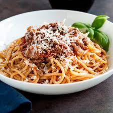

Spaghetti Bolognese

Description
Spaghetti Bolognese is a classic Italian dish made with spaghetti pasta, a meat-based sauce, and a variety of vegetables. The sauce is made by cooking ground beef with diced onion, garlic, carrots, and celery, then simmering with canned tomatoes, beef broth, red wine, and seasonings. The finished sauce is served over cooked spaghetti and garnished with fresh basil.
Ingredients:
- Spaghetti
- Ground beef
- Onion
- Garlic
- Canned tomatoes
- Beef broth
- Carrots
- Celery
- Red wine (optional)
- Olive oil
- Salt
- Black pepper
- Fresh basil
Recipe:
- Boil a large pot of salted water for the spaghetti. Cook spaghetti according to package instructions.
- In a large pan, heat olive oil over medium heat. Add diced onion and minced garlic and cook until soft.
- Add ground beef to the pan and cook until browned, breaking it up into small pieces as it cooks.
- Stir in diced carrots and celery.
- Pour in canned tomatoes, beef broth, and red wine (if using). Season with salt and black pepper to taste.
- Let the sauce simmer for at least 30 minutes.
- Serve the sauce over cooked spaghetti and garnish with fresh basil.